Hi, I'm Fang WU!
 Welcome to my personal web page! I am a research engineer at Tsinghua University advised by Jinbo Xu. My research focus includes deep learning algorithms (e.g., graph neural networks) for computational science — in particular, 3D geometric networks, diffusion generative models, domain adaptation, and other applications in chemistry and structural biology. I obtained my Master's degree at Columbia University, advised by Dragomir Radev.
Welcome to my personal web page! I am a research engineer at Tsinghua University advised by Jinbo Xu. My research focus includes deep learning algorithms (e.g., graph neural networks) for computational science — in particular, 3D geometric networks, diffusion generative models, domain adaptation, and other applications in chemistry and structural biology. I obtained my Master's degree at Columbia University, advised by Dragomir Radev.
Email: fw2359@columbia.edu
Address: Haidian District, Beijing, China
News and Highlights
[2023/04] Two papers are accepted by ICML 2023.
[2023/02] One work on molecular domain adaptation is accepted by Patterns.
[2023/01] A talk on M2D2 invited by MILA and Valence.
[2022/12] Two papers are accepted by AAAI 2023.
[2022/10] One work on 3D pretraining is accepted by Advanced Science.
Research Summary
* represents equal contribution and co-first authorship.
Graph Neural Networks (GNNs)
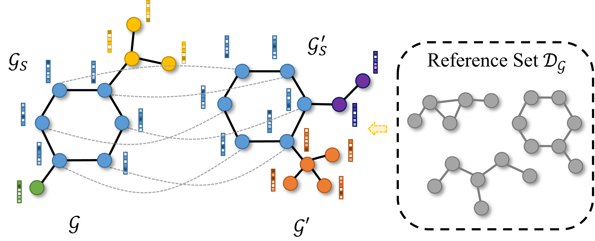
Explaining Graph Neural Networks via Non-parametric Subgraph Matching
Fang Wu, Lirong Wu, Siyuan Li, Dragomir Radev, Stan Z. Li
ICML 2023
[Paper]
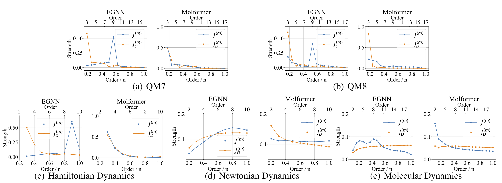
Discovering and Explaining the Representation Bottleneck of Graph Neural Networks from Multi-order Interactions
Fang Wu*, Siyuan Li*, Dragomir Radev, Stan Z. Li
arXiv 2022
[Paper]
[Code]
3D Geometric Deep Learning for Molecules, Proteins, and Materials
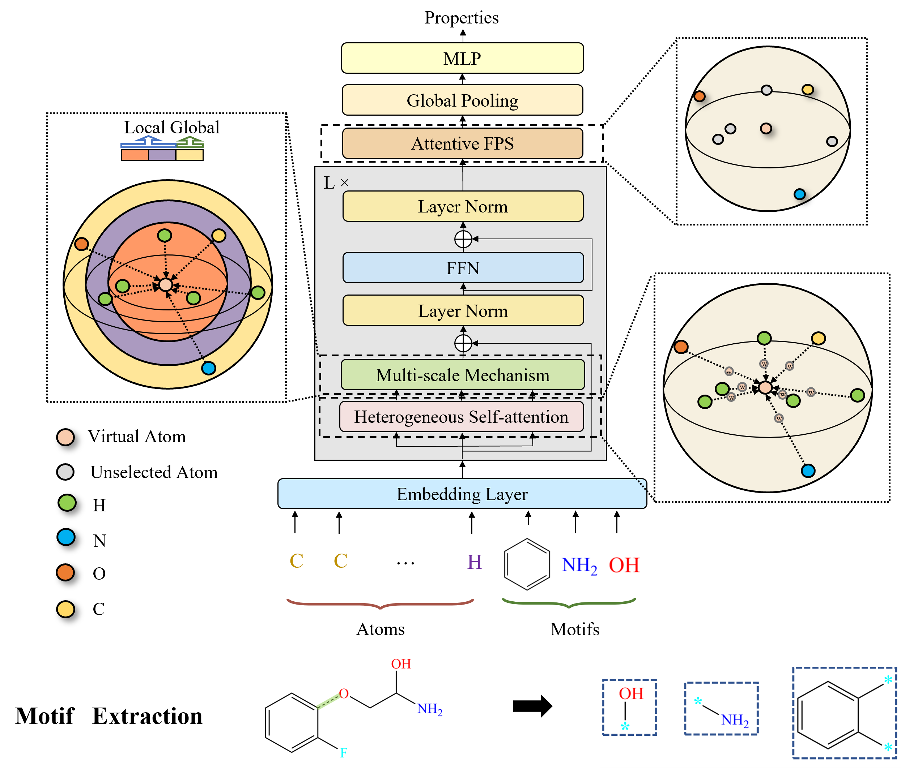
Molformer: Motif-based Transformer on 3D Heterogeneous Molecular Graphs.
Fang Wu, Dragomir Radev, Stan Z. Li
AAAI 2023
[Paper]
[Code]
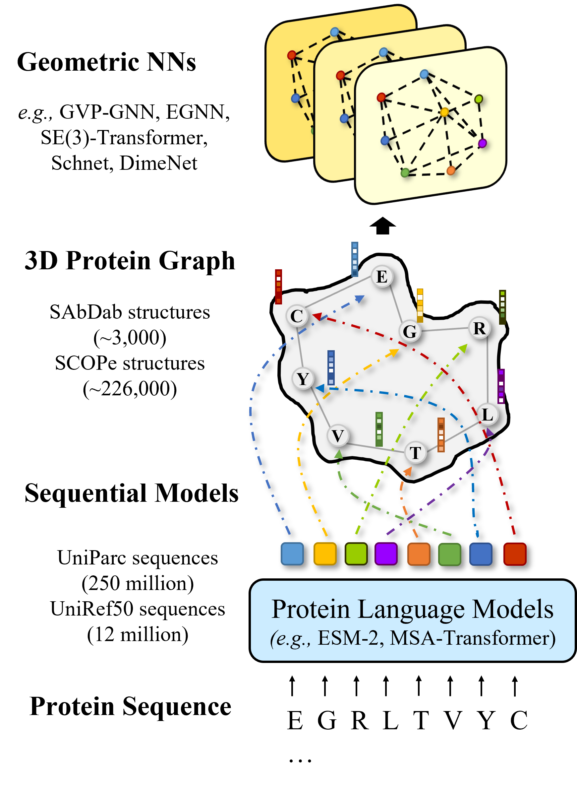
When Geometric Deep Learning Meets Pretrained Protein Language Models.
Fang Wu, Dragomir Radev, Jinbo Xu
Communications Biology
[Paper]
[Code]
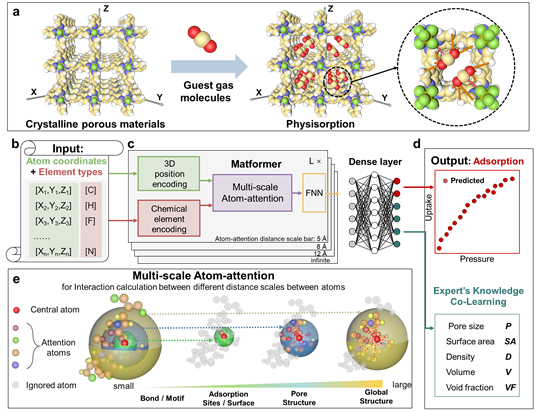
Direct Prediction of Gas Adsorption via Spatial Atom Interaction Learning.
Jiyu Cui*, Fang Wu*, Wen Zhang*, Lifeng Yang*, Jianbo Hu, Yin Fang, Peng Ye, Qiang Zhang, Xian Suo, Yiming Mo, Xili Cui, Huajun Chen, Huabin Xing
Under Review by Nature Communication
Pretraining & Semi-supervised Learning
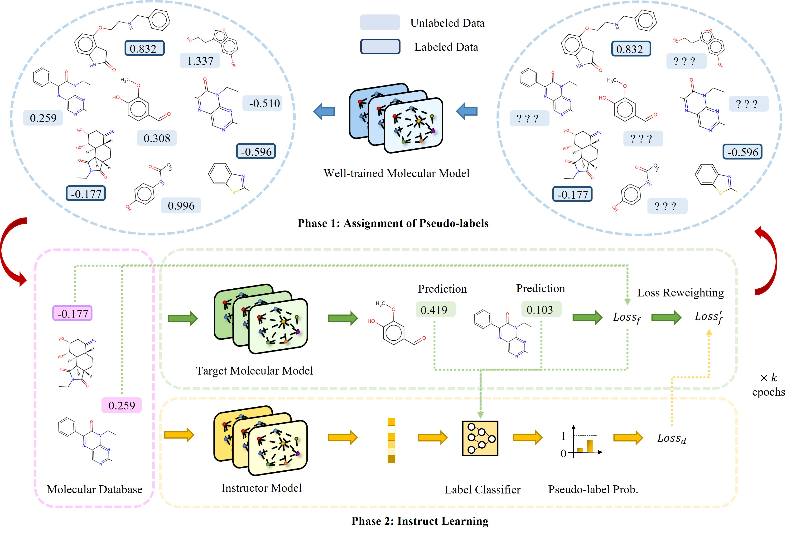
InstructBio: A Large-scale Semi-supervised Learning Paradigm.
Fang Wu, Huiling Qin, Siyuan Li, Stan Z. Li, Xianyuan Zhan, Jinbo Xu
arXiv 2023
[Paper]
[Code]
Domain Adaptation in Biochemistry
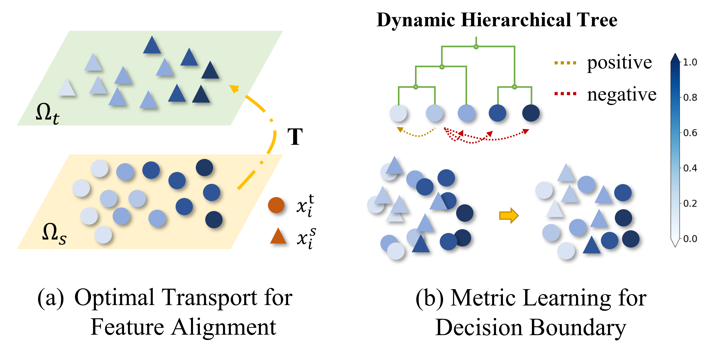
Metric Learning-enhanced Optimal Transport for Biochemical Regression Domain Adaptation
Fang Wu*, Nicolas Courty*, Shuting Jin*, Stan Z. Li
Patterns
[Paper]
[Code]
Deep Learning with Molecular Dynamics (MD) Simulations
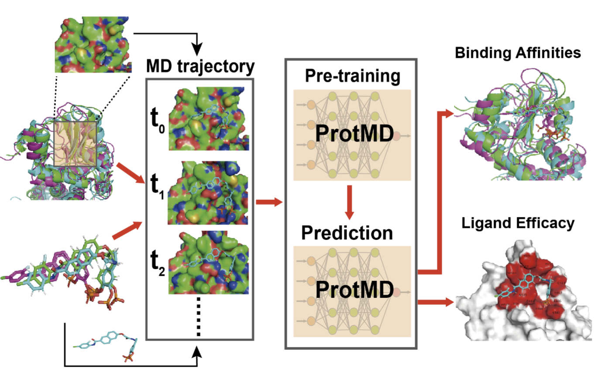
Pre-training of Equivariant Graph Matching Networks with Conformation Flexibility for Drug Binding
Fang Wu*, Shuting Jin*, Yinghui Jiang*, Xurui Jin, Bowen Tang, Zhangming Niu, Qiang Zhang, Xiangxiang Zeng, Stan Z. Li
Advanced Science
[Paper]
[Code]
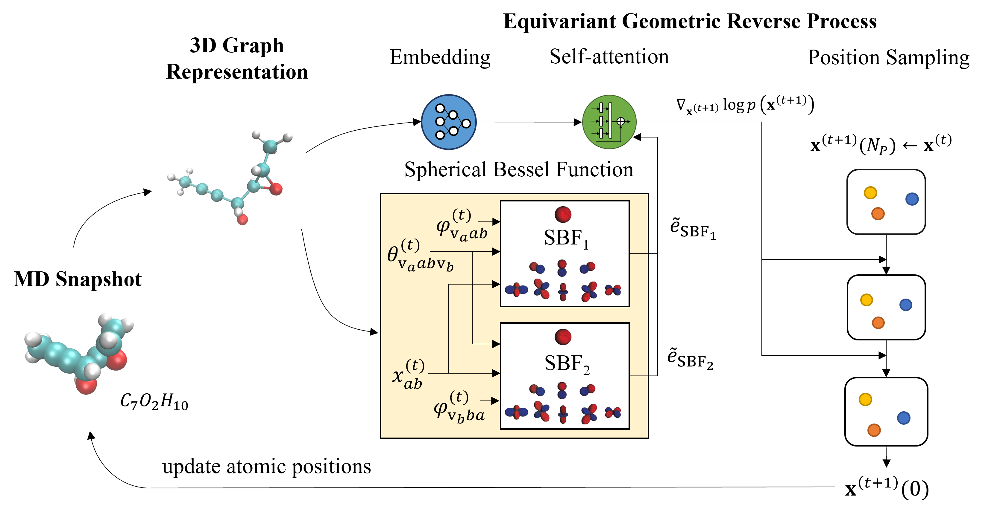
DiffMD: A Geometric Diffusion Model for Molecular Dynamics Simulations
Fang Wu, Stan Z. Li
AAAI 2023 (Oral)
[Paper]
Others (e.g., NLP, CV)
 InsertGNN: Can Graph Neural Networks Outperform Humans in TOEFL Sentence Insertion Problem?
InsertGNN: Can Graph Neural Networks Outperform Humans in TOEFL Sentence Insertion Problem?
Fang Wu, Stan Z. Li
arXiv 2022
[Paper]
[Data]
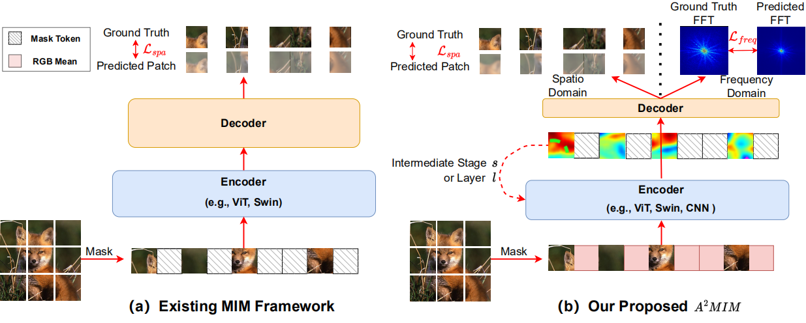
Architecture-Agnostic Masked Image Modeling: From ViT back to CNN
Siyuan Li*, Di Wu*, Fang Wu, Zelin Zang, Kai Wang, Lei Shang, Baigui Sun, Hao Li, Stan Z. Li
ICML 2023
[Paper]
[Code]
Education
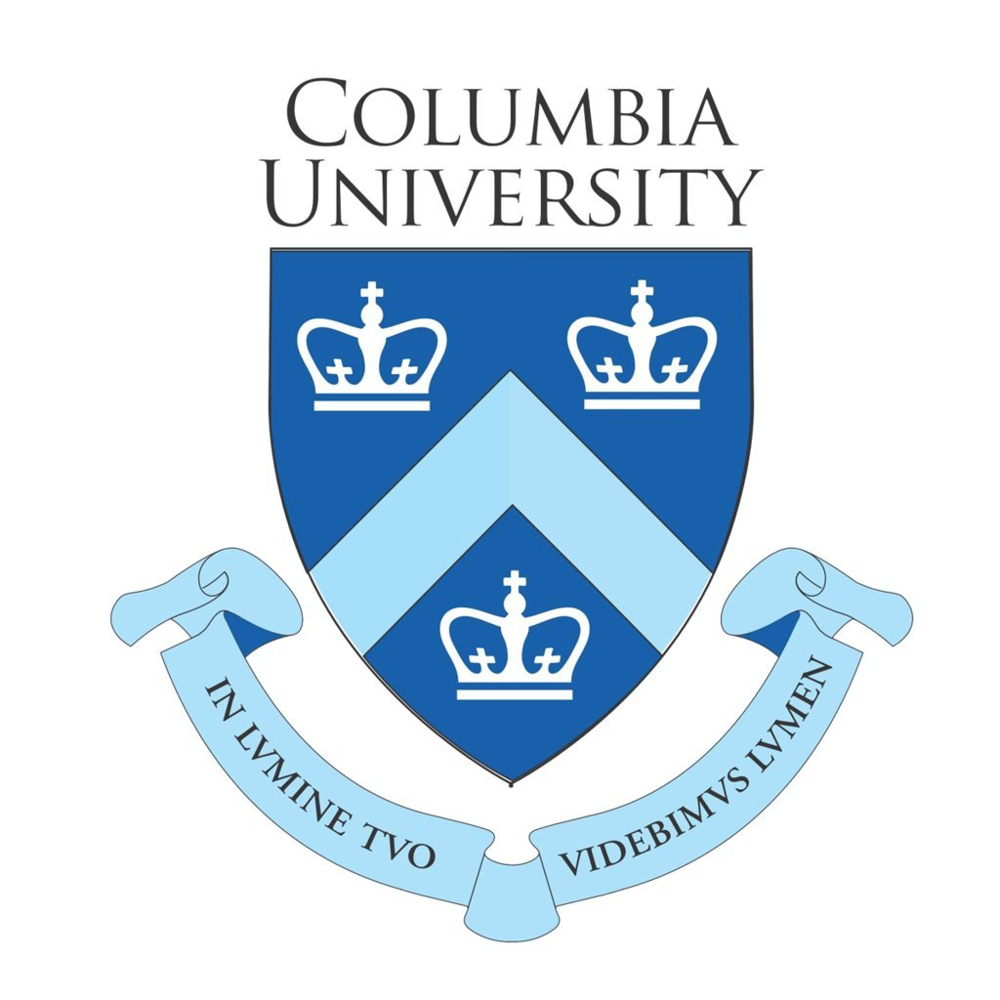
Columbia University, 2019-2021
• Master of Science
• GPA: 3.51/4.0
Central University of Economics and Finance, 2015-2019
• Bachelor of Science
• GPA: 3.85/4.0
Research Experience
Before joining Tsinghua University, I feel fortunate to be a research assistant advised by Stan Z. Li at Westlake University, and recieved guidance as a visiting student from Huajun Chen, Xiang Bai and Danny Lan.
 Research Engineer (2022.08-Now)
Research Engineer (2022.08-Now)
• Tsinghua University
• Advised by Jinbo Xu
Research Assistant (2021.11-2022.07)
• Westlake University
• Advised by Stan Z. Li
Visiting Student (2021.03-2021.10)
• Zhejiang University
• Hosted by Huajun Chen
Acknowledgement
My study cannot be possible without the support from my friends and awesome collaborators! Check out some of my collaborators:
Professor Dragomir Radev at Yale University
Professor Stan Z. Li, Professor Danny Lan, Dr. Siyuan Li, Dr. Lirong Wu at Westlake University
Professor Huajun Chen, Professor Qiang Zhang, Dr. Jiyu Cui at Zhejiang University
Dr. Xurui Jin, Dr. Zhangming Niu at MindrankAI
Dr. Shuting Jin at Xiamen University
Professor Jinbo Xu, Professor Wenbing Huang at Tsinghua University
Professor Nicolas Courty at University Bretagne Sud
Professor Buyong Ma at Shanghai Jiaotong University
Professor Xiang Bai at Huazhong University of Science and Technology
Aside from university collaborations, I also collaborated with many industrial companies and non-profit organizations, including MindrankAI and MoleculeMind